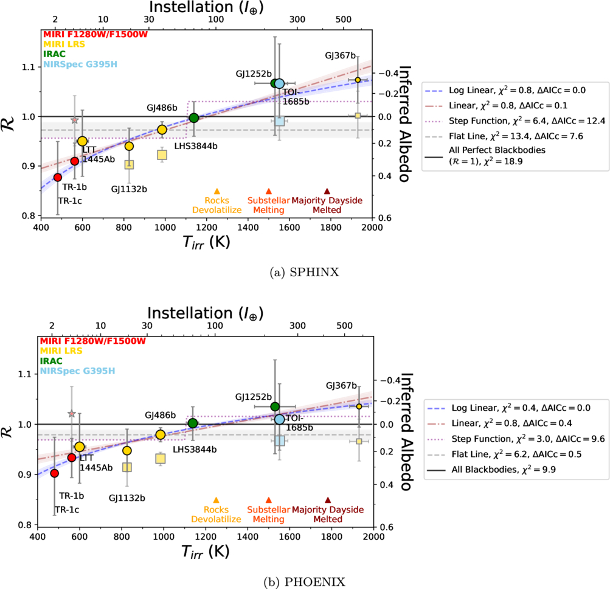

Exoplanet Surfaces
What are the surfaces of rocky exoplanets made of?
I am interested in studying planets outside of our Solar System (“exoplanets”) to better understand our place in the cosmos. With the advent of the James Webb Space Telescope (JWST), we can begin to study what the atmospheres and surfaces of Earth-sized planets are made of through spectroscopic infrared observations. This can help reveal whether the surface composition of rocky planets in the Solar System are common, and potentially whether these planets ever had liquid water.
In 2025, I published a study synthesizing our current observations of the thermal emission of Earth-sized terrestrial planets. We did this by comparing these planets' measure dayside temperature to the maximum expected for a dark, airless planet. We found potential evidence for a strong trend in planet temperature, with hotter planets on close-in orbits generally having darker surfaces. This can be explained by a process known as space weathering, which coats airless planets in a thin layer of dark iron particles.

Dark, bare rocks
I also help interpret JWST observations of individual rocky planets, including GJ 1132 b, GJ 486 b, TOI-1685 b, and LHS 3844 b. We showed that the surface of the rocky planet LHS 3844 b (a.k.a. Kua'kua) may be rich in the mineral olivine. This may mean that the planet recently experienced a giant impact, or that the planet has active volcanic resurfacing. This result has been further supported by new observations, although the conclusions are still tentative.
Related JWST programs
- Data team JWST GTO 1274 (PI: Jonathan Lunine)Extrasolar Planet Science with JWST · includes GJ 1132bCycle 1
- Data team JWST GO 1743 (PI: Megan Weiner Mansfield)Constraining the Atmosphere of the Terrestrial Exoplanet Gl486bCycle 1
- Data team JWST GO 1846 (PI: Laura Kreidberg)A Search for Signatures of Volcanism and Geodynamics on the Hot Rocky Exoplanet LHS 3844bCycle 1
- Cycle 2
- Data team JWST GO 4931 (PI: Megan Weiner Mansfield)Constraining the atmosphere of the terrestrial exoplanet TOI-4481bCycle 3
Related publications
- The dark and featureless surface of rocky exoplanet LHS 3844 b from JWST mid-infrared spectroscopy Nature Astronomy, 10, 1129–1144, 2026 DOI arXiv
- The JWST Rocky Worlds DDT Program Reveals GJ 3929b to Likely Be a Bare Rock The Astrophysical Journal Letters, 995, L52, 2025 DOI arXiv
- The Cosmic Shoreline Revisited: A Metric for Atmospheric Retention Informed by Hydrodynamic Escape The Astrophysical Journal, 992, 198, 2025 DOI arXiv
- Population-level Hypothesis Testing with Rocky Planet Emission Data: A Tentative Trend in the Brightness Temperatures of M-Earths The Astrophysical Journal, 987, 22, 2025 DOI arXiv
- A Dark, Bare Rock for TOI-1685 b from a JWST NIRSpec G395H Phase Curve The Astronomical Journal, 170, 49, 2025 DOI arXiv
- No Thick Atmosphere on the Terrestrial Exoplanet Gl 486b The Astrophysical Journal Letters, 975, L22, 2024 DOI arXiv
- JWST Thermal Emission of the Terrestrial Exoplanet GJ 1132b The Astrophysical Journal Letters, 973, L8, 2024 DOI arXiv